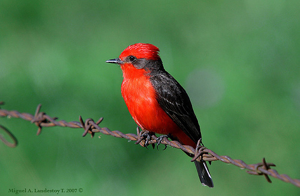

Pájaro Brujo de San Cristóbal

¡Descubre al Pájaro Brujo de San Cristóbal!
- ¡Hola amiguito! ¿Sabías que el Pájaro Brujo de San Cristóbal es un pequeño y colorido habitante de las Islas Galápagos?
- Su nombre científico es Pyrocephalus dubius, pero puedes llamarlo "pájaro brujo". ¡Su plumaje es asombroso, con tonos amarillos y cafés!
- Aunque es raro verlo, ¡este pájaro solía estar presente en varias islas grandes de Galápagos!
- Es un experto cazador de insectos y su dieta consiste en pequeños bocadillos invertebrados.
- ¡Aunque es pequeño, desempeñó un papel vital en la biodiversidad de las islas!
- Recuerda, ¡si alguna vez lo ves, admíralo desde lejos para no molestarlo! 🌈
¡Descubre al Pájaro Brujo de San Cristóbal!
- ¡Bienvenido a las Islas Galápagos, donde la naturaleza te sorprenderá! Conoce al encantador Pájaro Brujo de San Cristóbal.
- Nombre Científico: Pyrocephalus dubius
- Este pequeño y vibrante pájaro, con su plumaje en tonos amarillos y cafés, es una maravilla para ver.
- Estado de Conservación: Desafortunadamente, se considera extinto desde 2016, pero su historia aún es fascinante.
- ¿Dónde solía vivir? Originalmente presente en varias islas grandes de Galápagos, pero ahora es raro encontrarlo.
- Curiosidad turística: Aunque es pequeño, su contribución a la biodiversidad de las islas fue significativa.
- Si por casualidad lo ves, ¡disfruta de este encuentro único pero respeta su espacio!
Información para biólogos:
- Nombre Científico: Pyrocephalus dubius
- Estado de Conservación: Extinto (UICN). Última observación en 2016, búsquedas intensas entre 2015-2021 sin resultados.
- Distribución Geográfica: Originalmente presente en todas las islas grandes de Galápagos, excepto Baltra, Española, Genovesa y San Cristóbal.
- Hábitat: Se ha observado en hábitats costeros, áridos, de transición, agricultura y asociados con Scalesia y helechos.
- Origen: Considerado nativo de Galápagos, aunque con poblaciones en declive y posiblemente extintas en algunas islas.
- Presencia en el Hábitat: Raro en Santa Fé en censos recientes (2017), en declive en Santa Cruz, Santiago, y posiblemente extinto en Floreana.
- Dieta: Se alimenta exclusivamente de invertebrados, capturando insectos en vuelo o en el suelo con vuelos rápidos.
- Peso: Aproximadamente 10 g.
- Anidación: Nidificación en forma de copa.
- Cambios y Evolución: La población ha experimentado un declive significativo, clasificado como extinto desde 2016.
- Biodiversidad: Aunque actualmente en declive, su papel en la biodiversidad del ecosistema de Galápagos es notable.
- Nombres Relacionados: No hay nombres étnicos específicos.